การทดลองใช้งานบอร์ด Mojo v3 - Xilinx Spartan 6 FPGA (legacy)#
▷ บอร์ด Mojo v3 FPGA#
บอร์ด Mojo v3 FPGA ของบริษัท Alchitry Labs (Embedded Micro) เป็นบอร์ดที่มีชิป FPGA (Xilinx XC6SLX9) และ MCU (Atmel ATmega32U4) อยู่บนบอร์ด บอร์ดนี้ได้มีการระดมทุนสร้างโดยเปิดเป็นโครงการใน KickStarter ในปีค.ศ. 2013
ผู้เขียนได้เคยทดลองใช้บอร์ดนี้ครั้งแรกในปีพ.ศ. 2557 และก็ไม่ได้ใช้มาหลายปี ในปัจจุบัน (ขณะที่กำลังเขียนบทความนี้) ดูเหมือนว่า ซอฟต์แวร์ "Xilinx ISE WebPACK" ของบริษัท Xilinx ที่จะต้องนำมาใช้ในการออกแบบวงจรสำหรับบอร์ด Mojo V3 ไม่ได้มีการอัปเดตมาตั้งแต่ปีค.ศ. 2013 (เวอร์ชันสุดท้ายคือ v14.7) และทางบริษัท Embedded Micro ก็ไม่ได้มีการจำหน่ายบอร์ดนี้อีกแล้ว
วัตถุประสงค์ของการเขียนบทความนี้คือ การรวบรวมข้อมูลเกี่ยวกับการใช้งานบอร์ด Mojo v3 และทดลองใช้งานอีกครั้ง (หลังจากที่ไม่ได้ใช้มาหลายปี)
ข้อมูลเชิงเทคนิคสำหรับบอร์ด Mojo v3 มีดังนี้
- FPGA: Xilinx Spartan XC6SLX9-TQG144-2C
- Logic Cells: 9,152 (1,430 Slices / 5,720 LUT+FF pairs)
- MCU: Atmel ATmega32U4 (8-bit AVR, 3.3V @8MHz, Mojo v3 bootloader)
- Serial Flash: 4MBits (Microchip SST25VF040B-80-4I)
- I/O Voltage: 3.3V only (all I/O Banks)
- LDO Voltage Regulators:
- 5V to 3.3V: NCP1117ST33
- 3.3V to 1.2V: LD1117S12C
- 1x Push Button (Reset)
- 8x LED (SMD, yellow-color)
- 1x Micro USB Connector
- Voltage Supply:
- +5V via the USB Connector
- +4.8 ~ +12V via DC Jack (5.5x2.1mm Barrel, center-positive)
- On-board Oscillator: 50MHz
- Software: Xilinx ISE WebPACK
- Schematic (.pdf)
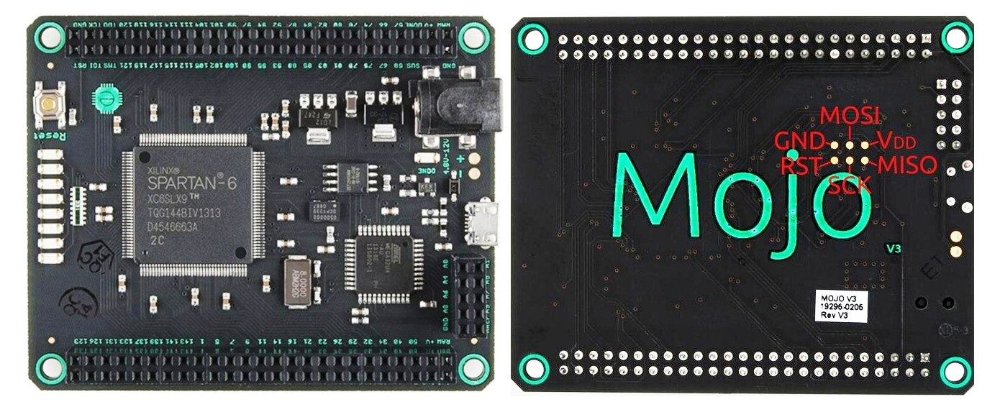
รูป: บอร์ด Mojo v3
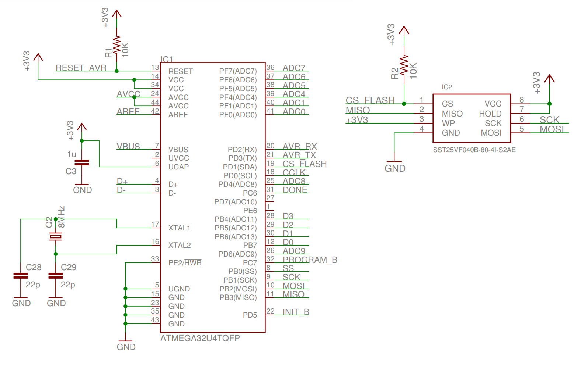 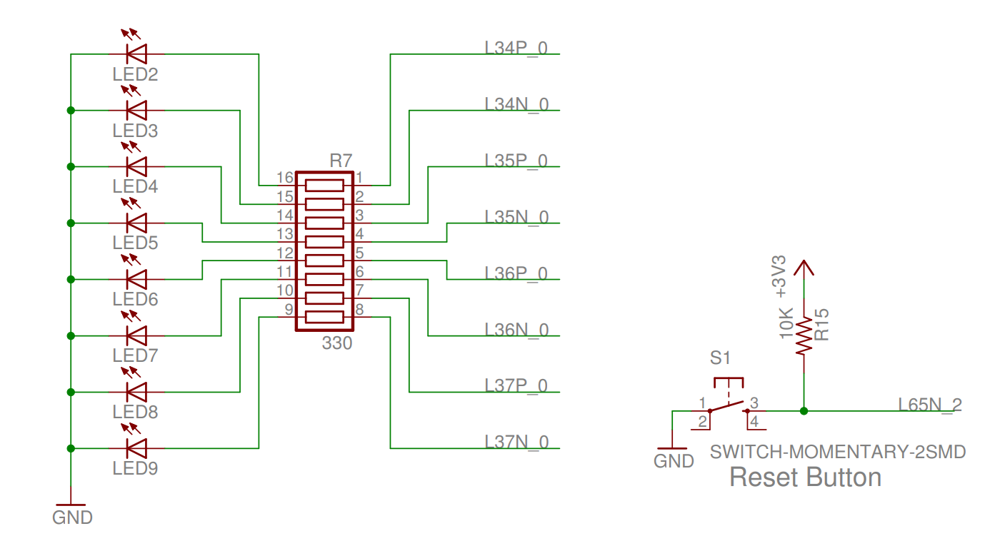 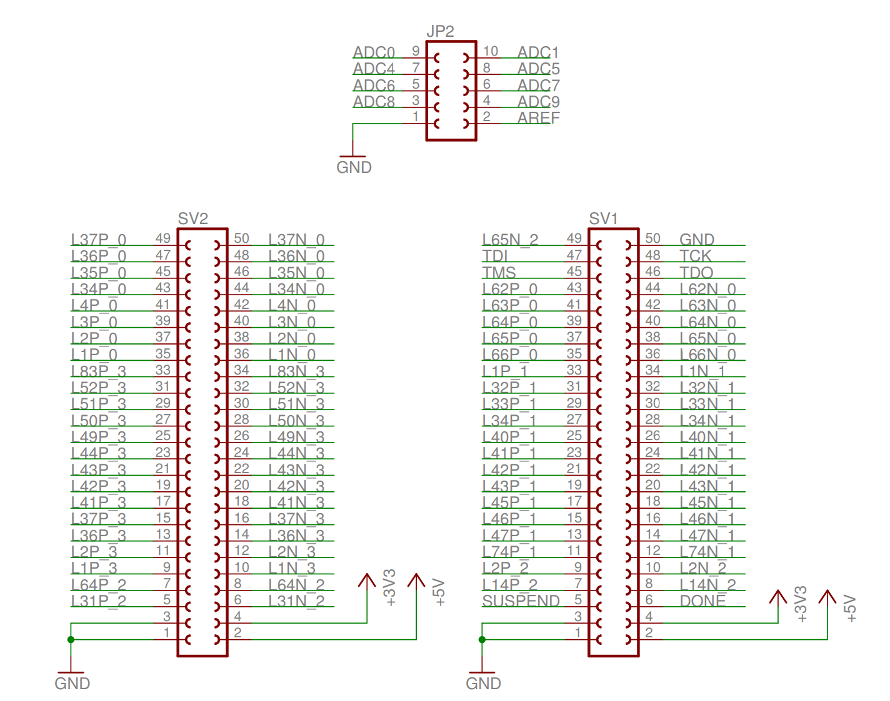
รูป: ผังวงจร (เลือกมานำเสนอบางส่วน) ของบอร์ด Mojo v3
เมื่อเปิดไฟเลี้ยงและฮาร์ดแวร์เริ่มทำงาน เฟิร์มแวร์ในชิป ATmega32U4 จะทำหน้าที่อ่านข้อมูล "บิตสตรีม" จากชิปหน่วยความจำแฟลช (External Serial Flash) มาใช้ในการโปรแกรมชิป FPGA เพื่อให้วงจรภายในชิป FPGA ทำงานได้ตามวงจรดิจิทัลที่ผู้ใช้ได้ออกแบบไว้
เมื่อการคอนฟิกชิป FPGA ทำได้สำเร็จแล้ว ชิป ATmega32U4 จะทำหน้าที่เป็น SPI Slave และคอยสื่อสารกับวงจรภายในชิป FPGA ถ้ามีการใช้งานเป็น SPI Master เช่น ให้วงจร ADC ภายในชิป ATmega32U4 ทำหน้าที่อ่านระดับแรงดันแอนะล็อกหนึ่งใน 8 ช่องอินพุตที่เลือก แล้วส่งข้อมูลกลับไปยัง FPGA เพื่อนำไปประมวลผลต่อ ในขณะที่เชื่อมต่อสาย USB กับคอมพิวเตอร์ของผู้ใช้ เฟิร์มแวร์ในชิป ATmega32U4 จะทำให้มองเห็นพอร์ต Serial (CDC-ACM Virtual COM Port)
หากต้องการติดตั้งเฟิร์มแวร์สำหรับ ATmega32U ที่ใช้ Arduino-Compatible Bootloader จะต้องทำผ่านทางขา ISP (2x3 Pins) และจะต้องติดตั้ง Arduino Sketch ที่มีชื่อว่า Mojo-v3-loader การคอมไพล์โค้ดและอัปโหลดไปยังบอร์ดครั้งแรก จะต้องใช้วิธี ISP และใช้ร่วมกับอุปกรณ์ อย่างเช่น USBasp (เลือกแรงดันไฟเลี้ยงเป็น +3.3V ไม่ใช่ +5V)
- ติดตั้ง Arduino Mojo Plugin สำหรับ Arduino IDE (v1.8.x) เพื่อให้สามารถคอมไพล์ Arduino Sketch สำหรับ Mojo v3 - ATmega32U4 ได้
- ถ้าเป็นเฟิร์มแวร์เดิม จะต้องมีการเขียนไฟล์ Mojo-v3 Arduino Bootloader
(ไฟล์
Caterina-MojoV3.hex) ไปยังชิป ATmega32U4 ให้ได้ก่อน - คอมไพล์โค้ดและอัปโหลด Arduino Sketch "Mojo-v3-loader" ไปยังชิป ATmega32U4 โดยเลือกพอร์ต Serial ที่ตรงกับบอร์ด Mojo v3 ที่กำลังเชื่่อมต่อกับเครื่องของผู้ใช้
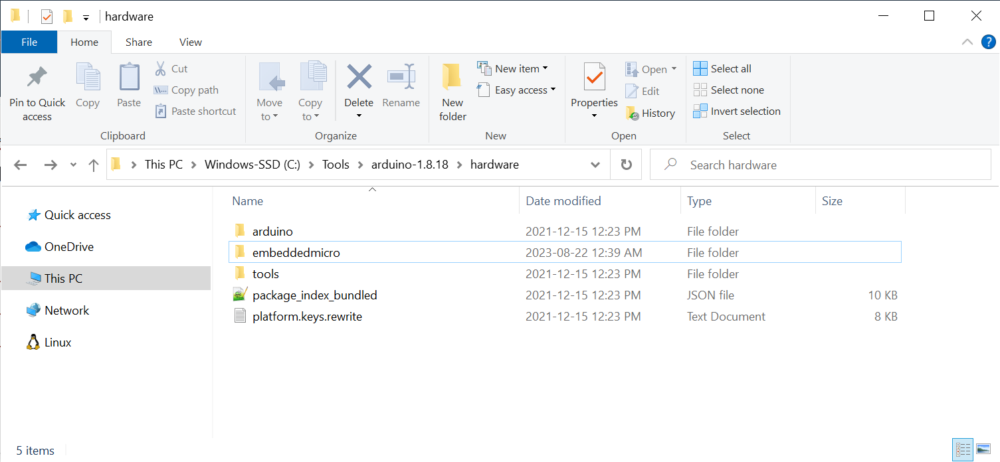
รูป: การติดตั้ง Arduino Mojo Plugin สำหรับ Arduino IDE v1.8.x
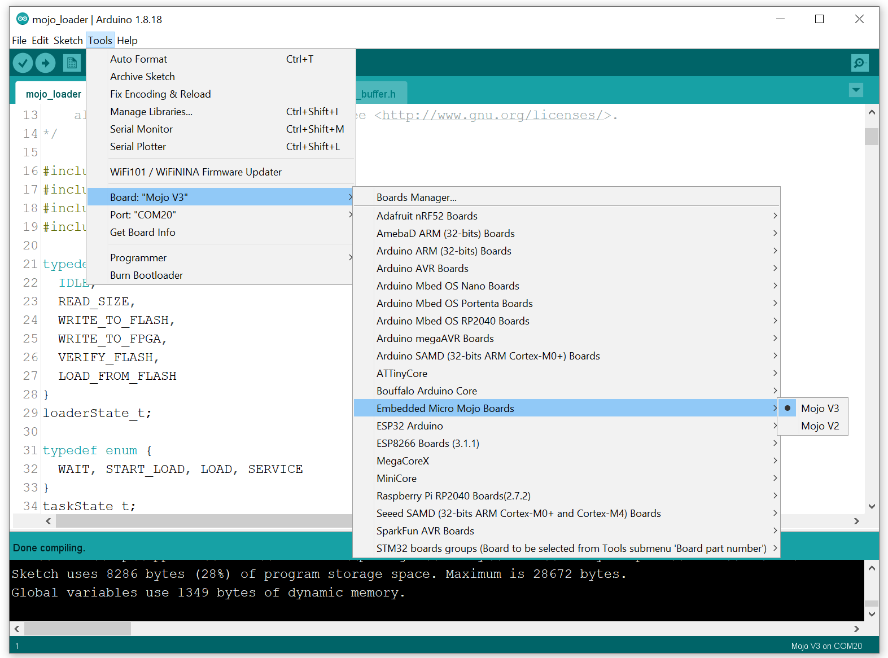
รูป: การคอมไพล์โค้ด Mojo-v3-loader โดยเลือกใช้บอร์ด Mojo v3
ซอฟต์แวร์ที่มีชื่อว่า Alchitry Labs ซึ่งมาพร้อมกับโปรแกรม Alchitry Loader และสามารถนำมาใช้แทนที่ Mojo Loader ของเดิมได้ ( มีทั้งเวอร์ชันสำหรับ Windows และ Linux)
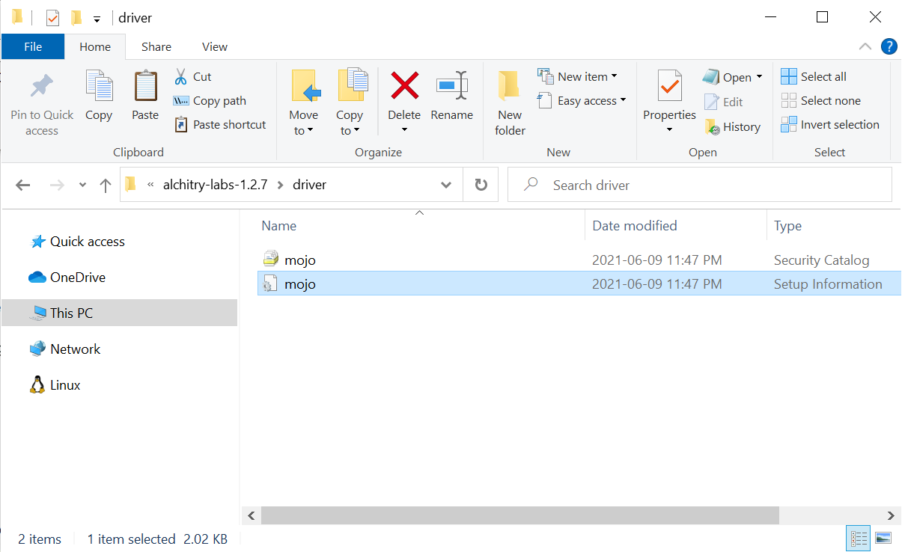
รูป: การติดตั้ง Mojo V3 USB Device Driver สำหรับ Windows 10
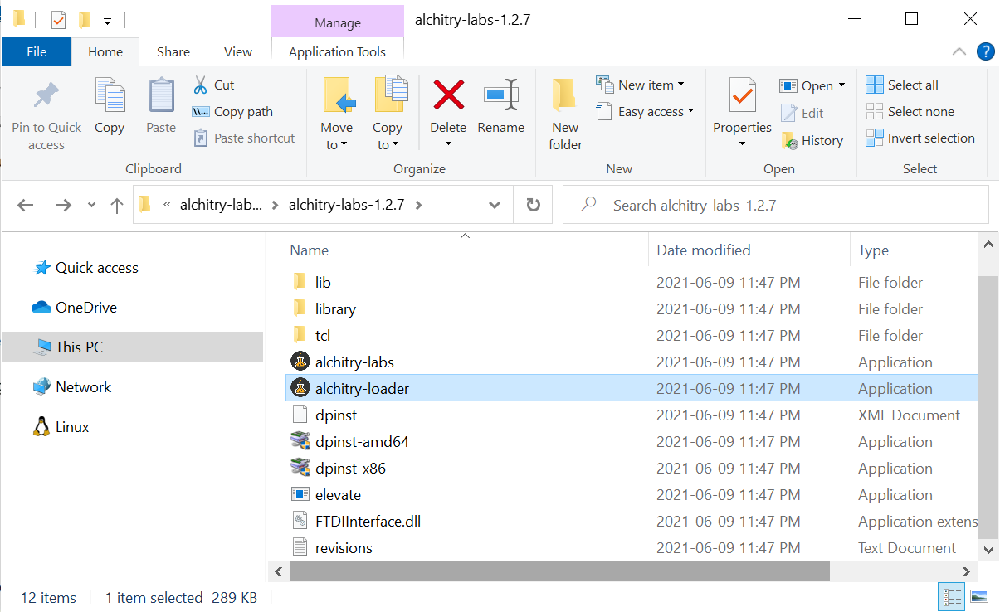
รูป: การคลิกเลือกโปรแกรม alchitry-loaders เพื่อเปิดใช้งาน
โปรแกรม Alchitry Loader จะทำหน้าที่สื่อสารกับโปรแกรม Mojo-v3-loader ในชิป ATmega32U4 และใช้สำหรับโปรแกรมไฟล์ .bin ลงในหน่วยความ SRAM-based Configuration Memory ภายในชิป FPGA โดยตรง หรือ โปรแกรมลงในชิปหน่วยความจำภายนอกซึ่งเป็น SPI Flash การเลือกวิธีโปรแกรมลงชิป SPI Flash จะทำให้ชิป FPGA ถูกโปรแกรมด้วยข้อมูลที่อยู่ในชิปหน่วยความจำโดยอัตโนมัติทุกครั้งที่ป้อนไฟเลี้ยงให้บอร์ด
▷ การติดตั้ง Xilinx ISE Design Suite (for Linux)#
ดาวน์โหลดไฟล์ Archive File: Xilinx_ISE_DS_Lin_14.7_1015_1.tar
จากเว็บไซต์ของ Xilinx และขอไฟล์ลิขสิทธิ์ (License File) เพื่อใช้งานซอฟต์แวร์
และจะได้รับไฟล์ทางอีเมล์ จากนั้นให้นำไป Xilinx License File (.lic) ไปใส่ไว้ ~/.Xilinx/
แตกไฟล์ .tar ในไดเรกทอรี ./Xilinx_ISE_DS_Lin_14.7_1015_1
แล้วทำคำสั่งเรียกโปรแกรม xsetup เพื่อเริ่มต้นขั้นตอนการติดตั้งโปรแกรม (เลือกติดตั้งไว้ใน /opt/Xilinx/14.7)
$ sudo apt install libncurses5 libstdc++5 libmotif-dev \
xfonts-75dpi xfonts-100dpi
$ sudo mkdir -p /opt/Xilinx/14.7
$ cd ./Xilinx_ISE_DS_Lin_14.7_1015_1
$ sudo chmod +x xsetup
$ sudo ./xsetup
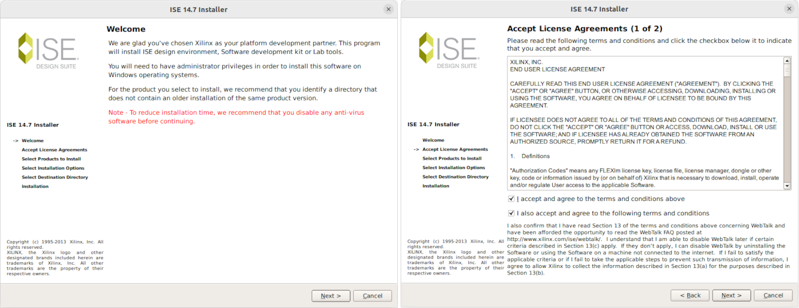 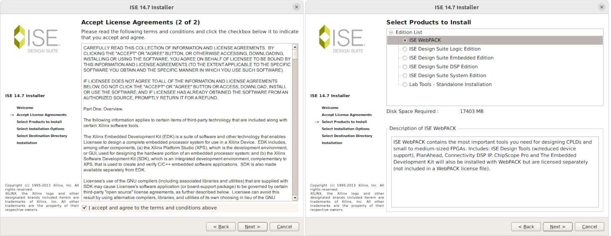 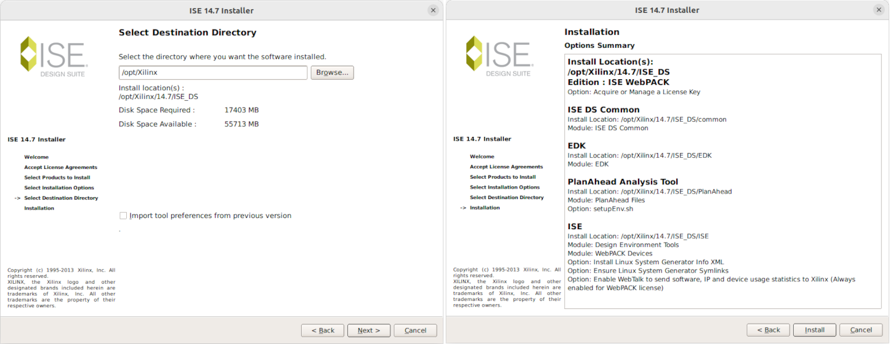
รูป: ขั้นตอนการติดตั้ง Xilinx ISE v14.7 WebPACK
เมื่อติดตั้งโปรแกรมได้แล้ว ให้ลองทำคำสั่งต่อไปนี้
## Under the directory: /opt/Xilinx/14.7
$ tree -L 2
.
└── ISE_DS
├── common
├── EDK
├── ISE
├── PlanAhead
├── settings32.csh
├── settings32.sh
├── settings64.csh
└── settings64.sh
5 directories, 4 files
ทำคำสั่งเพื่อเรียกใช้โปรแกรม ise
$ source /opt/Xilinx/14.7/ISE_DS/settings64.sh
$ /opt/Xilinx/14.7/ISE_DS/ISE/bin/lin64/ise &
แนะนำให้ติดตั้ง Java / OpenJDK สำหรับ Ubuntu Linux ด้วย ถ้าต้องการใช้โปรแกรม Alchitry Loader สำหรับ Linux โดยทำคำสั่งดังนี้
$ sudo apt-cache search openjdk | grep -E "openjdk\-[0-9]+.\-jdk "
openjdk-17-jdk - OpenJDK Development Kit (JDK)
openjdk-18-jdk - OpenJDK Development Kit (JDK)
openjdk-19-jdk - OpenJDK Development Kit (JDK)
$ sudo apt install openjdk-17-jdk -y
$ java -version
openjdk version "17.0.8" 2023-07-18
OpenJDK Runtime Environment (build 17.0.8+7-Ubuntu-122.04)
OpenJDK 64-Bit Server VM (build 17.0.8+7-Ubuntu-122.04...)
ขั้นตอนในการสร้างดีไซน์และแปลงเป็นไฟล์บิตสตรีม มีดังนี้
- สร้างโปรเจคใหม่ (New Project Creation)
- เพิ่มหรือสร้างไฟล์ Source Code (เขียนโค้ด VHDL หรือ Verilog) ให้เป็นส่วนหนึ่งของโปรเจกต์
- เขียนหรือแก้ไขโค้ด (HDL Code Editing)
- ทำขั้นตอนสังเคราะห์วงจรจากโค้ด (Logic Synthesis)
- กำหนดตำแหน่งขาให้สัญญาณ I/O ของวงจร และข้อกำหนดอื่นๆ (I/O Pin & Standard Assignment + Design Constraints) โดยสร้างไฟล์ .ucf (User Constraints File) เพิ่มไว้ในโปรเจกต์
- ดูตัวอย่างไฟล์
mojo.ucfสำหรับบอร์ด Mojo v3 - ทำขั้นตอนแปลงให้เป็นวงจรดิจิทัลที่ใช้ทรัพยากรของชิป FPGA จัดวางตำแหน่งและหาเส้นทางสัญญาณให้เหมาะสมที่สุด (Performing Mapping, Placement and Routing Steps)
- สร้างไฟล์บิตสตรีม (Bitstream File Generation) และเลือกสร้างไฟล์เอาต์พุต .bin
- โปรแกรมชิป FPGA บนบอร์ด Mojo v3 ด้วยซอฟต์แวร์ที่มีชื่อว่า Mojo Loader / Alchitry Loader (Java-based)
สำหรับผู้ใช้ Windows 10 / 11 แนะนำให้ผู้ใช้ติดตั้ง Ubuntu 22.04 LTS VM โดยใช้ Oracle VirtualBox เพื่อติดตั้งและใช้งานซอฟต์แวร์ Xilinx ISE WebPack v14.7 (Linux version)
ตัวอย่างโปรเจกต์ตัวอย่าง มี 2 ตัวอย่าง ดังนี้
led_blinkleds_running

รูป: หน้าต่างหลักของ Xilinx ISE WebPACK
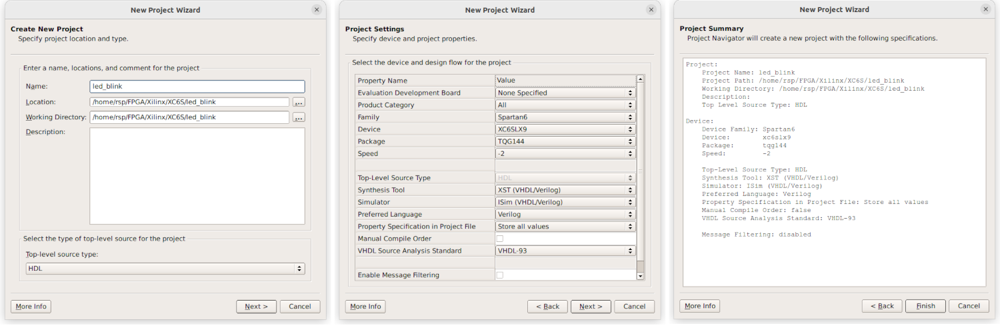
รูป: ขั้นตอนการสร้างโปรเจกต์ใหม่ ตั้งชื่อโปรเจกต์ ไดเรกทอรีของโปรเจกต์ และชิป FPGA ( XC6SLX9-TQG144-2C)
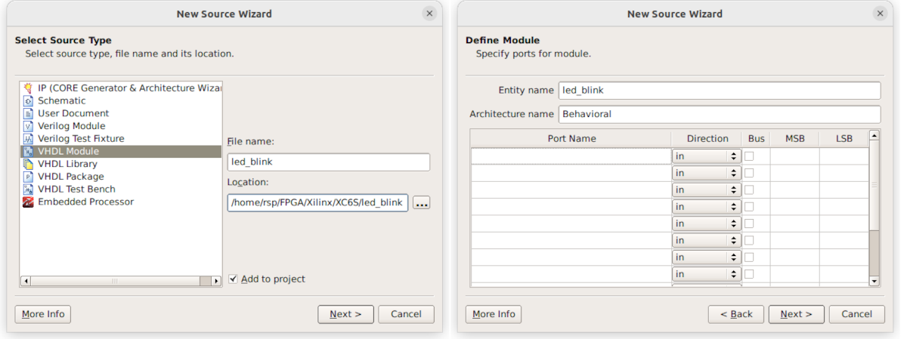
รูป: สร้างไฟล์ VHDL แล้วเพิ่มไว้ในโปรเจกต์
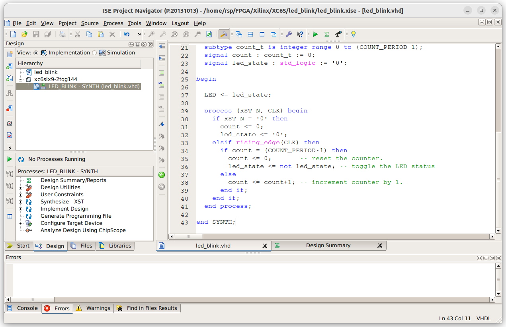
รูป: เพิ่ม/แก้ไขโค้ด VHDL ตามตัวอย่าง
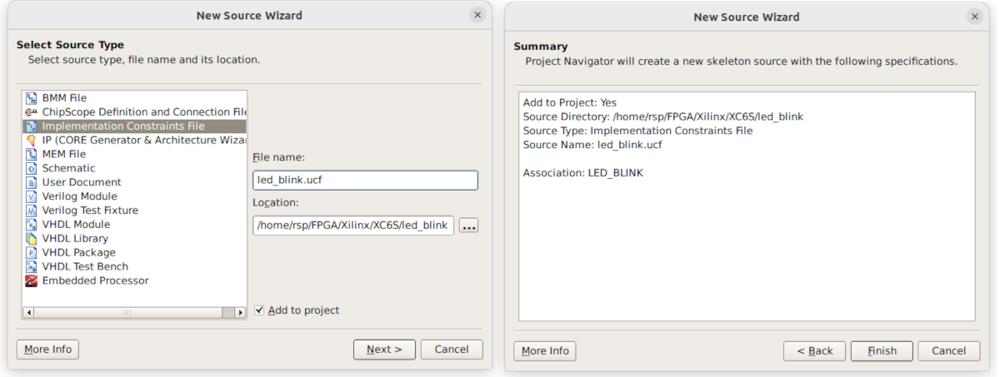
รูป: เพิ่มไฟล์ Implementation Constraints File (.ucf)
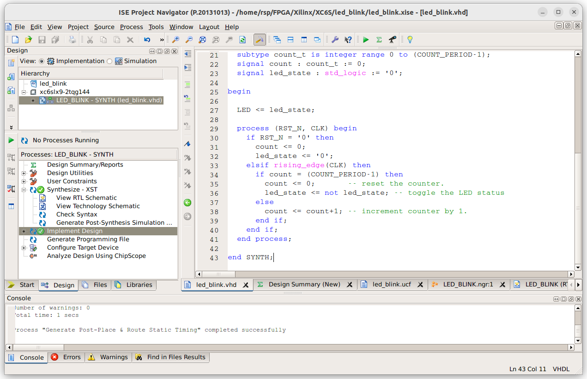
รูป: ทำขั้นตอนใน Xilinx FPGA Design Flow เพื่อแปลงโค้ด VHDL ให้เป็นไฟล์บิตสตรีม
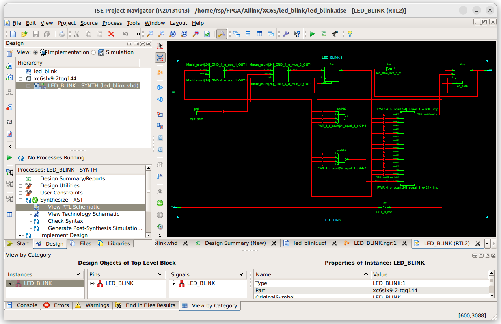
รูป: ลองเปิดดูผังวงจรที่ได้จากการสังเคราะห์วงจร
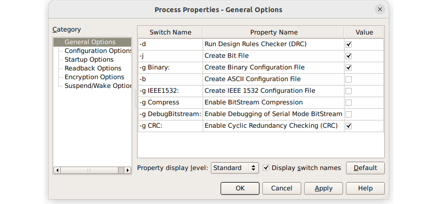
รูป: การตั้งค่า "Create Binary Configuration File"
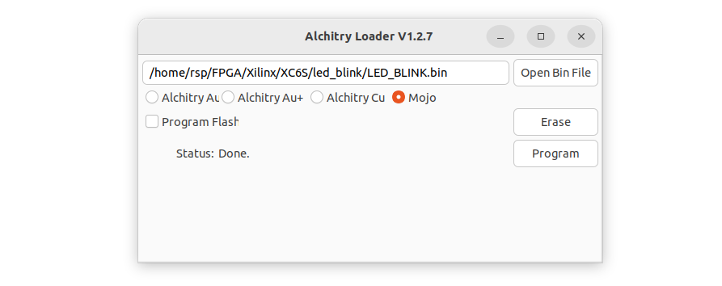
รูป: การใช้โปรแกรม Alchitry Loader เพื่ออัปโหลดไฟล์ .bin ไปยังชิป FPGA บนบอร์ด Mojo V3*
โค้ดตัวอย่างที่ 1
File: led_blink.vhd
-- File: led_blink.vhd
-- Mojo V3 FPGA Development Board
-- CLK : P56
-- RST_N : P38
-- LED : P134
library IEEE;
use IEEE.STD_LOGIC_1164.ALL;
use IEEE.NUMERIC_STD.ALL;
entity LED_BLINK is
generic( CLK_HZ : natural := 50000000 );
port ( CLK : in STD_LOGIC;
RST_N : in STD_LOGIC;
LED : out STD_LOGIC
);
end LED_BLINK;
architecture SYNTH of LED_BLINK is
constant COUNT_PERIOD : integer := CLK_HZ/2; -- Half period
subtype count_t is integer range 0 to (COUNT_PERIOD-1);
signal count : count_t := 0;
signal led_state : std_logic := '0';
begin
LED <= led_state;
process (RST_N, CLK) begin
if RST_N = '0' then
count <= 0;
led_state <= '0';
elsif rising_edge(CLK) then
if count = (COUNT_PERIOD-1) then
count <= 0; -- reset the counter.
led_state <= not led_state; -- toggle the LED status
else
count <= count+1; -- increment counter by 1.
end if;
end if;
end process;
end SYNTH;
File: led_blink.ucf
## Mojo v3 board (XC6SLX-2TQG144)
NET "clk" TNM_NET = clk;
TIMESPEC TS_clk = PERIOD "clk" 50 MHz HIGH 50%;
NET "CLK" LOC = P56 | IOSTANDARD = LVTTL;
NET "RST_N" LOC = P38 | IOSTANDARD = LVTTL;
NET "LED" LOC = P123 | IOSTANDARD = LVTTL;
โค้ดตัวอย่างที่ 2
File: leds_running.vhd
library ieee;
use ieee.std_logic_1164.all;
use ieee.numeric_std.all;
entity LEDS_RUNNING is
generic (
CLK_HZ : natural := 50000000;
WIDTH : natural := 8
);
port(
CLK : in std_logic; -- system clock
RST_N : in std_logic; -- acive-high asynchronous reset
LEDS : out std_logic_vector(WIDTH-1 downto 0)
);
end LEDS_RUNNING;
architecture SYNTH of LEDS_RUNNING is
constant COUNT_MAX: integer := (CLK_HZ/10) - 1;
subtype count_t is integer range 0 to COUNT_MAX;
signal count : count_t := 0;
signal leds_reg : std_logic_vector(2*WIDTH-1 downto 0);
begin
LEDS <= leds_reg(WIDTH-1 downto 0);
process (RST_N, CLK)
begin
if RST_N = '0' then
count <= 0;
leds_reg(WIDTH-1 downto 0 ) <= (others => '0');
leds_reg(2*WIDTH-1 downto WIDTH) <= (others => '1');
elsif rising_edge(CLK) then
if count = COUNT_MAX then
count <= 0; -- reset the counter.
leds_reg <= leds_reg(leds_reg'left-1 downto 0)
& leds_reg(leds_reg'left);
else
count <= count+1; -- increment counter by 1.
end if;
end if;
end process;
end SYNTH;
File: leds_running.ucf
## Mojo v3 board (XC6SLX-2TQG144)
NET "clk" TNM_NET = clk;
TIMESPEC TS_clk = PERIOD "clk" 50 MHz HIGH 50%;
NET "CLK" LOC = P56 | IOSTANDARD = LVTTL;
NET "RST_N" LOC = P38 | IOSTANDARD = LVTTL;
NET "LEDS<0>" LOC = P134 | IOSTANDARD = LVTTL;
NET "LEDS<1>" LOC = P133 | IOSTANDARD = LVTTL;
NET "LEDS<2>" LOC = P132 | IOSTANDARD = LVTTL;
NET "LEDS<3>" LOC = P131 | IOSTANDARD = LVTTL;
NET "LEDS<4>" LOC = P127 | IOSTANDARD = LVTTL;
NET "LEDS<5>" LOC = P126 | IOSTANDARD = LVTTL;
NET "LEDS<6>" LOC = P124 | IOSTANDARD = LVTTL;
NET "LEDS<7>" LOC = P123 | IOSTANDARD = LVTTL;
▷ กล่าวสรุป#
บทความนี้ได้นำเสนอข้อมูลเกี่ยวกับการใช้งานบอร์ด Mojo v3 ซึ่งเป็นบอร์ดที่ผู้ผลิตยกเลิกการผลิตและจำหน่ายไปหลายปีแล้ว แม้ว่าชิป Xilinx Spartan 6 ถือว่า เป็นชิปรุ่นเก่า และบริษัท Xilinx ไม่ได้พัฒนาซอฟต์แวร์สำหรับชิปตระกูลนี้แล้ว หากว่า ยังมีบอร์ด เช่น Mojo v3 ก็ยังสามารถนำมาใช้ในการเรียนรู้และทดลองเกี่ยวกับ FPGA ได้เช่นกัน
This work is licensed under a Creative Commons Attribution-ShareAlike 4.0 International License.
Created: 2023-08-22 | Last Updated: 2023-08-22